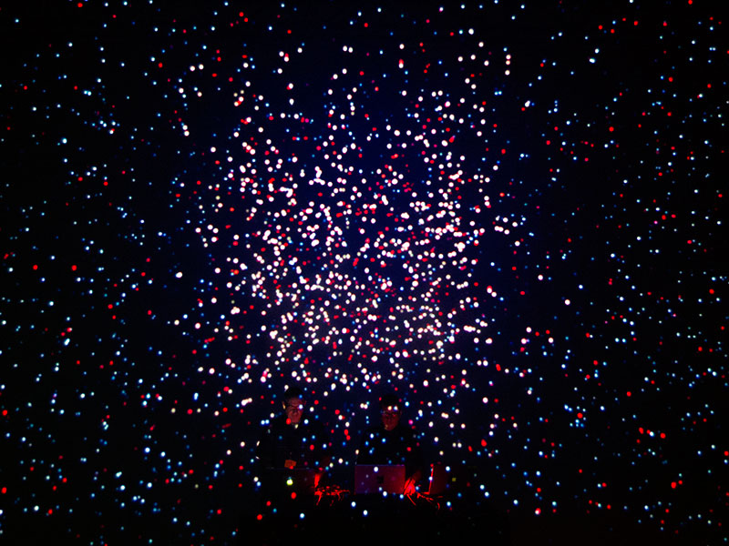

"D-Fuse ....joining the digital dots between sound and vision" The Wire Magazine
D-Fuse is a London-based visual arts company working across a range of media. Founded in the mid-1990s by Neurodiverse artist Mike Faulkner, its output encompasses installations, film, experimental documentary, photography, live cinema performances, VR/AR and architectural projects. From its origins in graphic/web design and VJing, D-Fuse’s work has evolved to address social and environmental themes and explore collaborative processes. Further to working with ground-breaking musicians Steve Reich, Beck, Hauschka, Scanner and Swayzak, many of D-Fuse’s projects, since 2004, features sound/music by audio director Matthias Kispert or audio-architect Martyn Ware [of Heaven 17/The Human League].
Notable Works
Carbon Chris Blipverts
A series of 5 x 40 second animations exploring aspects of Global warming issues, commissioned by SOS/Live Earth and endorsed by Al Gore. Each 40-second blipvert focuses on a cause of CO2 emissions - Cars, Rubbish, Aviation, Deforestation, and Electricity consumption. The SOS Blipverts animations use the format usually employed for advertisements to raise awareness about some of the main reasons behind climate change and what everyone can do about it. Supported by; Greenpeace, Professor Daniel Dorling of the University of Sheffield and the Worldmapper project.
Powers of X
A VR film adapting Charles and Ray Eames’ film, Powers of Ten, to explore Earth’s environmental fragility. This 10-minute experience invites the viewer to become immersed amongst cows grazing on a recently deforested area of the Amazon, before zooming out from our planet into the far reaches of the universe, reflecting on its fragile beauty, then returning to explore the bovine and human bloodstreams at sub-atomic level. All stages of this adventure have full VR interactivity and opportunities to access theme-appropriate infographics. Supported by; Arts Council England, Eames Office, Anglia Ruskin University (ARU).
Small Global
An interactive video installation that translates data about global interdependence, consumption and its environmental costs into an immersive environment. Dealing with deforestation and mobile phone production, we worked with academics from the School of Advanced Study, University of London in 2013 to create a new module about extreme energy extraction methods such as tar sands mining and shale gas fracking. This was premiered at the School of Advanced Study as part of Bloomsbury Festival. Supported by; Arts Council England, British Council, Eyebeam (NYC), University of London.